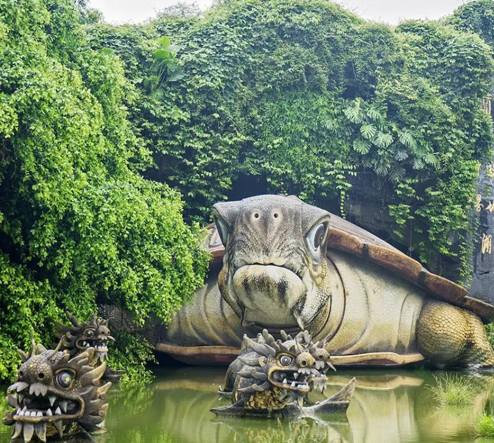
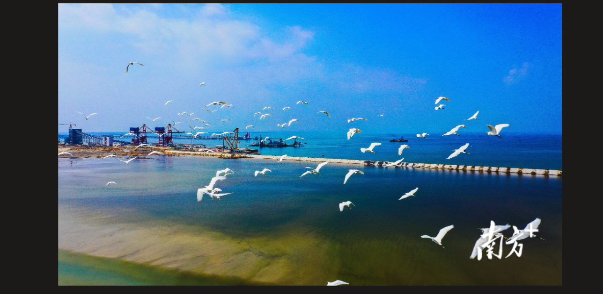

湖光岩
湖光岩是中国唯一的玛珥湖，湖水常年清澈碧绿，被誉为"天然氧吧"，湖光山色相映成趣，是湛江最著名的自然景观之一。

南海之滨 · 广东湛江
我的家乡是湛江，位于广东省西南部，坐落在雷州半岛上，东临南海，是一座风景秀丽的滨海城市，也是我国重要的深水港口城市。
湛江地处热带与亚热带之间，气候温暖湿润，冬无严寒，夏无酷暑，海产资源十分丰富，又有"海上之城""热带水果之乡"的美称。

湖光岩是中国唯一的玛珥湖，湖水常年清澈碧绿，被誉为"天然氧吧"，湖光山色相映成趣，是湛江最著名的自然景观之一。

沿着海边一路漫步，可以欣赏到碧海蓝天的壮阔景色；横跨海湾的海湾大桥更是湛江的地标性建筑。
湛江人以海鲜闻名，炭烧生蚝、蒜蓉大虾、白切鸡、沙虫粥，还有徐闻菠萝和雷州香蕉等热带水果，都是让人念念不忘的家乡味。